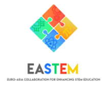
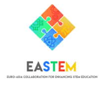

Proyek EASTEM
 

– Euro-Asia Collaboration for Enhancing STEM Education.
STEM merupakan singkatan dari Science, Technology, Engineering, and Mathematics (Ilmu pengetahuan, Teknologi, Rekayasa, dan Matematika). Pendidikan STEM adalah suatu pendekatan pembelajaran berdasarkan interaksi intensif antar satu atau lebih disiplin ilmu yang menghasilkan pengalaman berbasis praktek langsung. Pendekatan dilakukan melalui proses kegiatan yang bertujuan untuk menstimulasi perkembangan kemampuan berpikir kritis, kemampuan mengatasi masalah, dan keterampilan bekerjasama.
EASTEM adalah sebuah proyek pengembangan kapasitas yang dikelola oleh Erasmus+ (Rencana strategis ke-2) yang dilaksanakan antara tahun 2019-2022 dan dibentuk oleh sebuah konsorsium beranggotakan 3 perguruan tinggi dari Eropa, 3 perguruan tinggi dariVietnam, 3 perguruan tinggi dari Thailand, dan 4 perguruan tinggi dari Indonesia dengan total jumlah peserta adalah 59 peserta. Proyek ini bertujuan memastikan agar pendidikan STEM membekali para mahasiswa dengan kompetensi yang relevan dengan dunia kerja sehingga dapat meningkatkan kecakapan kerja.